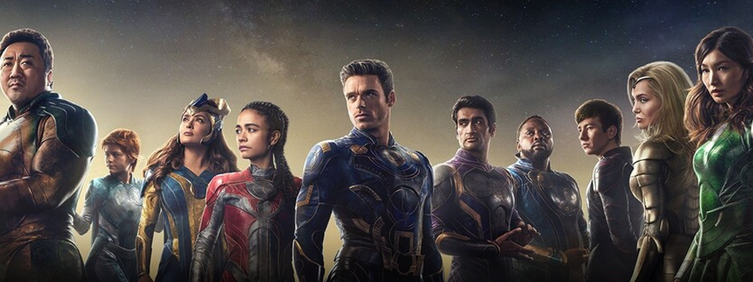

Sinópsis
Hace millones de años, los seres cósmicos conocidos como los Celestiales comenzaron a experimentar genéticamente con los humanos. Su intención era crear individuos superpoderosos que hicieran únicamente el bien, pero algo salió mal y aparecieron los Desviantes, destruyendo y creando el caos a su paso. Ambas razas se han enfrentado en una eterna lucha de poder a lo largo de la historia. En medio de esta guerra, Ikaris y Sersi tratarán de vivir su propia historia de amor. Esta película está basada en los cómics de Marvel creados por Jack Kirby.
